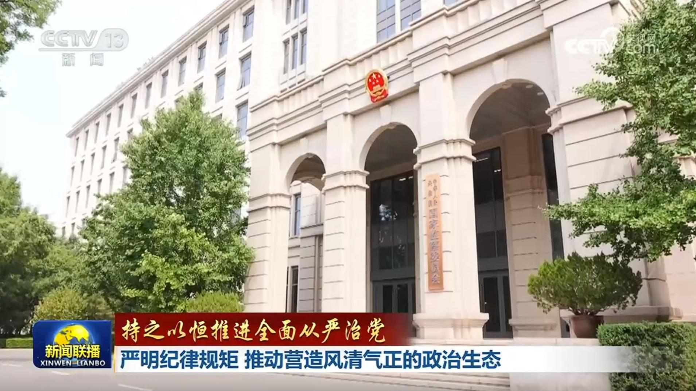
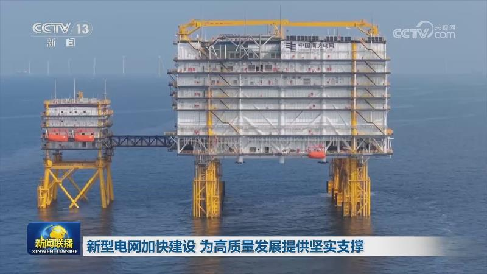
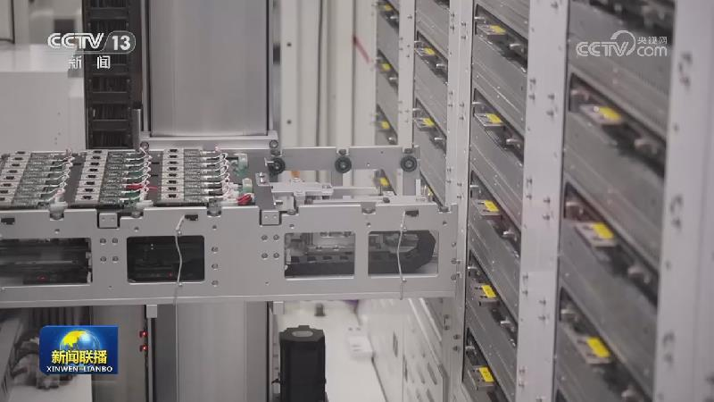
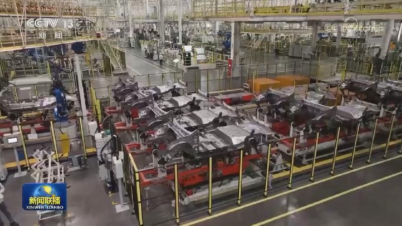
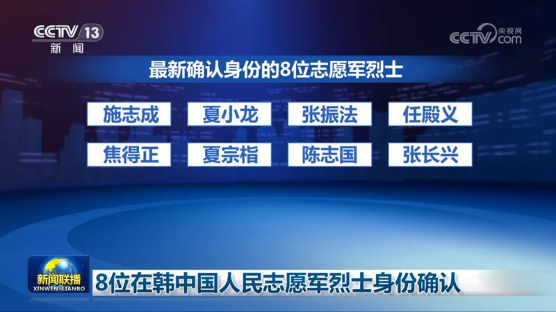
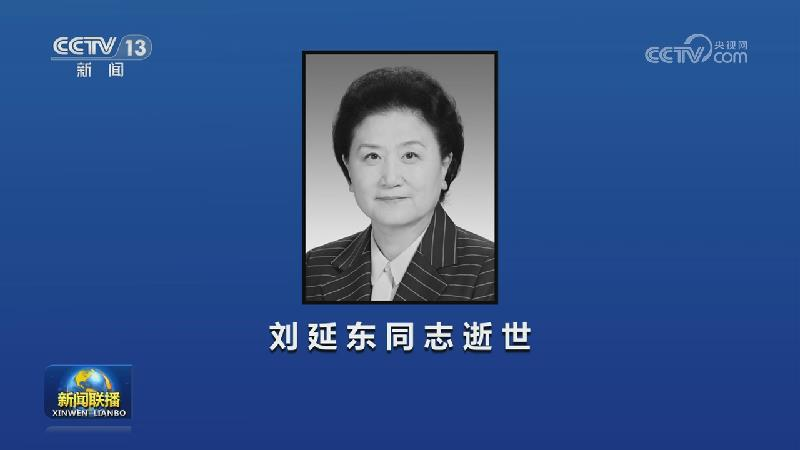
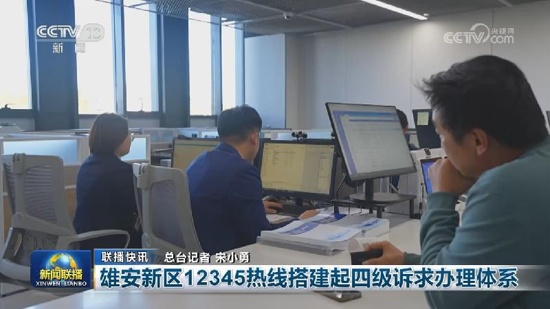
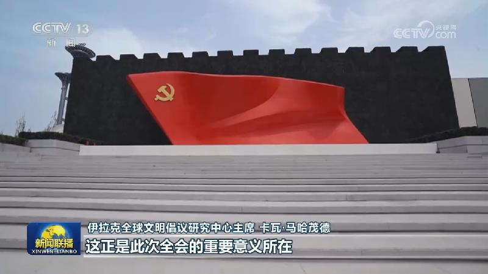
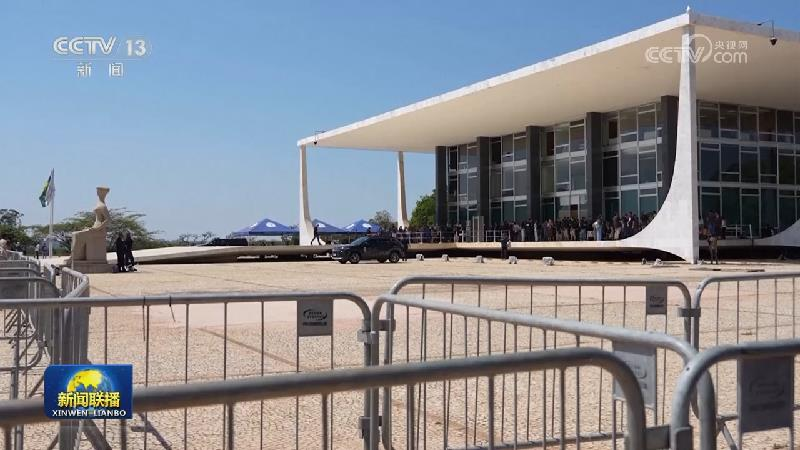

01

【持之以恒推进全面从严治党】严明纪律规矩 推动营造风清气正的政治生态
习近平总书记指出，党要管党、从严治党，靠什么管，凭什么治？就要靠严明纪律。党的十八大以来，以习近平同志为核心的党中央把党的纪律建设纳入新时代党的建设总体布局，把纪律规矩挺在前面，不断扎紧制度笼子，一体推进不敢腐、不能腐、不想腐，持之以恒净化政治生态，从根本上扭转了管党治党宽松软状况，为以中国式现代化全面推进强国建设、民族复兴伟业提供坚强保障。


习近平总书记指出，党要管党、从严治党，靠什么管，凭什么治？就要靠严明纪律。党的十八大以来，以习近平同志为核心的党中央把党的纪律建设纳入新时代党的建设总体布局，把纪律规矩挺在前面，不断扎紧制度笼子，一体推进不敢腐、不能腐、不想腐，持之以恒净化政治生态，从根本上扭转了管党治党宽松软状况，为以中国式现代化全面推进强国建设、民族复兴伟业提供坚强保障。

“六张网”中的电网是经济社会发展的“硬支撑”。从高山到戈壁，从沙漠到深海，各地大型电网加快建设，更绿的电能、更智能的调节正加速升级。

今年以来，中国推动进出口平衡发展，加大力度扩大进口。作为全球“超级买家”，中国超大规模市场与持续开放正为世界各国带来广阔的市场机遇。不久前，首批秘鲁鲜食香蕉经“钱凯—上海”海运航线运抵中国，这条航线把南美发往中国的海运时间压缩了三分之一。在中部航空货运枢纽湖北鄂州，从埃塞俄比亚首都飞来的全货机刚刚满载抵达。目前，“亚的斯亚贝巴—鄂州”货运航线已加密至每周7班。……
我国财政金融协同促内需一揽子政策实施以来，财政资金牵引金融资源发挥乘数效应，着力激发民间投资，促进居民消费，政策效能加速释放。

工业和信息化部等八部门近日印发《产业基础能力提升“十五五”规划》，围绕提升产业基础自主可控能力、增强产业基础创新能力等7个方面提出22项重点任务。
前三季度，我国铁路货运量稳步增长，物流产品不断丰富，通道效率显著提升。这两天，云南玉溪的菜农正忙着采收白花菜和西蓝花。以往，当地蔬菜主要依靠公路外销，成本高、损耗大。今年，随着中老铁路冷链班列常态化运行，越来越多的菜农选择通过铁路运输。

记者今天（10月28日）从退役军人事务部获悉，在韩中国人民志愿军烈士遗骸鉴定有了新进展，8位志愿军烈士身份得以确认。最新确认身份的8位志愿军烈士分别是施志成、夏小龙、张振法、任殿义、焦得正、夏宗栺、陈志国、张长兴。

中国共产党的优秀党员，久经考验的忠诚的共产主义战士，我党统一战线工作和我国教育科技、医疗卫生、妇女儿童工作的杰出领导人，中国共产党第十七届、十八届中央政治局委员，中国人民政治协商会议第十届全国委员会副主席，原国务委员，国务院原副总理刘延东同志，因病于2026年10月28日14时53分在北京逝世，享年81岁。

前三季度我国对自贸伙伴进出口额同比增长30%

国际人士高度关注中国共产党二十届五中全会。他们表示，中国共产党持续推进全面从严治党意义重大，为引领高质量发展和推进中国式现代化提供坚实支撑。

俄总统与北欧两国领导人通话